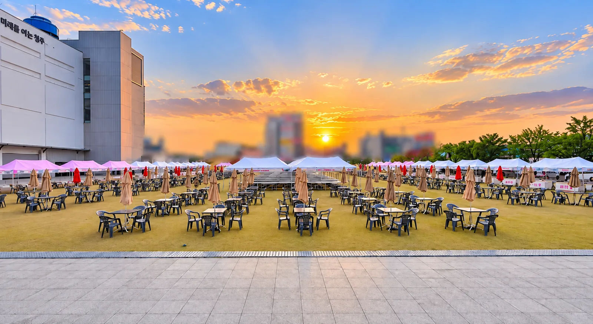
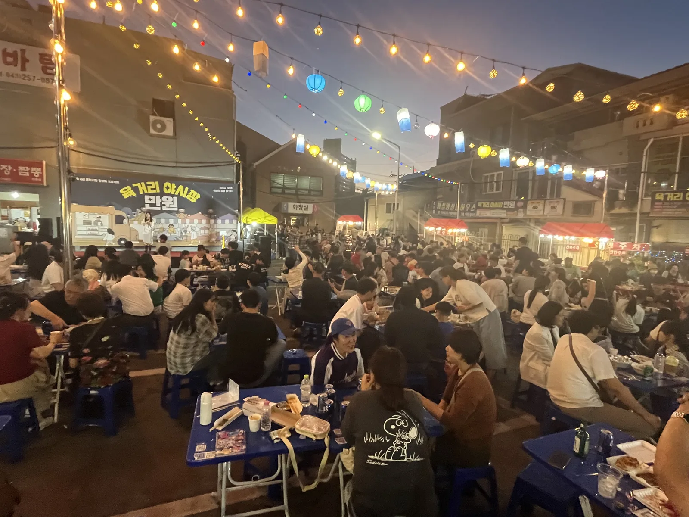
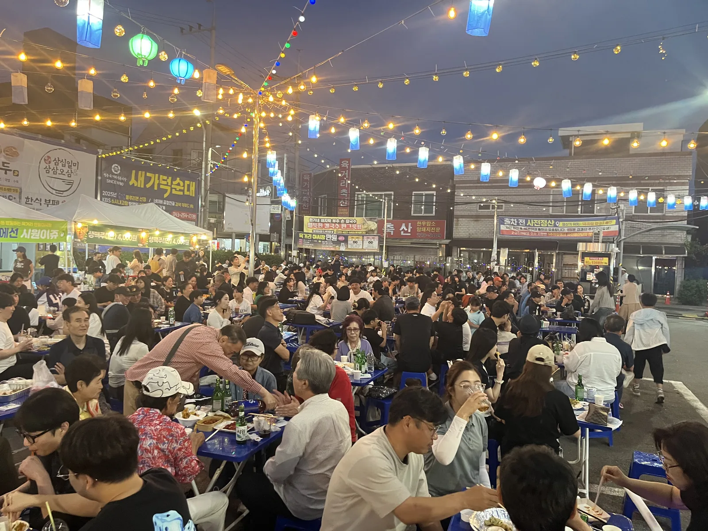

"방문객 5,000명"이라고 해서 의자 5,000개를 빌리는 축제는 없습니다. 필요한 건 같은 시간에 앉아 있는 사람 수입니다. 충청권 대형 축제 현장에서 저희가 수량을 잡는 계산법을 공개합니다.
동시 체류 인원 = 방문객 × 체류 비율
하루 방문객 5,000명, 행사 6시간, 평균 체류 1.5시간이면 같은 시간에 있는 사람은 약 1,250명입니다. 그중 앉아서 먹거나 공연을 보는 비율을 40~50%로 잡으면 좌석 500~600석이 나옵니다. 테이블은 6인 기준 100개 안팎.
- 좌석 = 동시 체류 인원 × 0.4~0.5
- 테이블 = 좌석 ÷ 6
- 피크 시간(저녁 6~8시)이 뚜렷한 먹거리 축제는 0.5 이상

먹거리 존은 "판매 부스 : 테이블 = 1 : 4"
먹거리 부스 20개면 테이블 80개 · 의자 480개가 기준입니다. 부스 열과 테이블 구역 사이에 3m 통로를 두고, 테이블은 부스에서 먼 쪽부터 채워지도록 배치합니다. 쓰레기 분리함은 테이블 20개당 1세트.

천막은 관람석이 아니라 "머무는 곳"에
대형 축제에서 관람석 전체에 천막을 치면 무대가 안 보입니다. 천막은 먹거리 테이블 · 체험 · 안내 · 응급 · 운영본부에만 두고, 관람 구역은 파라솔이나 그늘막으로 대신합니다. 야간에는 스트링 라이트를 테이블 구역 위로 걸면 조명과 분위기를 한 번에 해결합니다.

설치 · 철거 인력과 시간
테이블 100개 · 의자 600개 · 천막 30동 규모는 8명이 6시간이면 설치가 끝납니다. 전날 설치가 원칙이고, 철거는 다음 날 오전. 차량은 2.5톤 2대가 들어갈 진입로와 하차 공간이 필요하니 답사 때 가장 먼저 확인합니다.
자주 묻는 질문
Q축제 이틀 · 사흘 행사는 어떻게 계산하나요?
일별 피크 인원이 가장 큰 날을 기준으로 수량을 잡고, 행사 기간 내내 두고 씁니다. 야간 보관 · 우천 대비도 같이 계획합니다.
Q천안 · 아산 같은 충남 지역 축제도 가능한가요?
네. 충북 · 충남 · 세종 · 대전 전 지역 진행합니다. 대형 행사는 답사를 먼저 가서 차량 동선과 전기를 확인합니다.
Q무대 · 음향까지 한 번에 맡길 수 있나요?
네. 천막 · 테이블 · 의자와 무대 · 음향 · 조명을 한 팀이 세팅하면 동선이 겹치지 않아 설치가 빠릅니다.